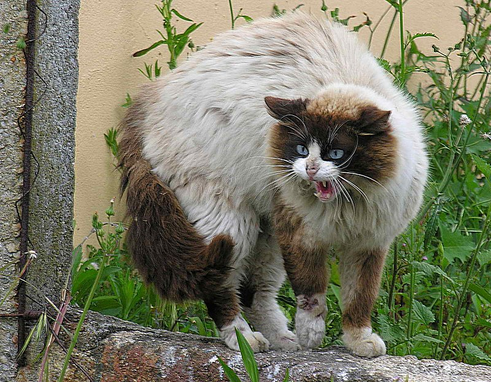

Todo sobre los gatos
Índice
Historia de los gatos
Los gatos han sido compañeros del ser humano desde hace miles de años. En el Antiguo Egipto, eran venerados y considerados simbolos de protección. Hoy en dia, son una de las mascotas más populares en todo el mundo, valorados por su independencia y comportamiento curioso.
Imagen de un Gato (Haz click para saber más)

Haz clic en la imagen para más Información sobre los gatos en Wikipedia
Características principales de los Gatos
- Son animales independientes pero pueden ser muy cariñosos.
- Poseen una aguda capacidad de caza y excelentes reflejos.
- Los gatos duermen entre 12 y 16 horas al día.
- Se comunican a través de maullidos, ronroneos y su lenguaje corporal.
Razas Populares de Gatos
Existen muchas razas de gatos, cada una con características particulares. A continuación, algunas de las más populares
| Raza |
Características |
Origen |
| Persa |
Gato de pelo largo, tranquilo y afectuoso |
Irán (Persia) |
| Slamés |
Delgado y elegante, conocido por sus ojos azules y carácter vocal. |
Tailandia |
| Maine Coon |
Una de las razas más grandes, amigable y sociable |
Estados Unidos |
Volver al índice